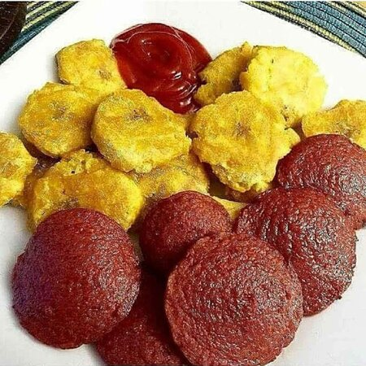

Tostones con Salami

Description:
English: Tostones are a delicious meal or snack for the whlie family! combine it with any sauce you'd like and some salami for a simple and quick snack!
Español: Los Tostones son una comida o una botana bien deliciosa para todo el familia! combínelos con cualquier salsa que gustarias para una botana fácil y rápida!
Ingredients:
- 1 plantain
- 1/2 piece of salami
- Any cooking oil
- Optional: Ketchup or some other sauce
Steps:
- Heat a pan up over a stove for a minute on medium heat
- Add your oil of choice
- Peel the plantain starting from the top of the stem
- Chop up the plantain into slices about 1/2 inch thick or less
- Add your plantain slices onto the pan and let it fry for until you see the bottom of the slices become a light yellow
- Flip your Tostones and let it cook until the other side becomes a light yellow
- Take the slices off of the pan and get a cup
- Smash the plantain Slices
- Refry both sides until both sides become a gliden yellow
- Fry your salami on the same oil and cook both sides until ready
Enjoy! Disfruitar!
Back